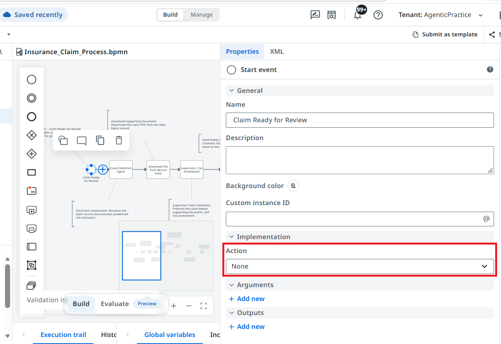
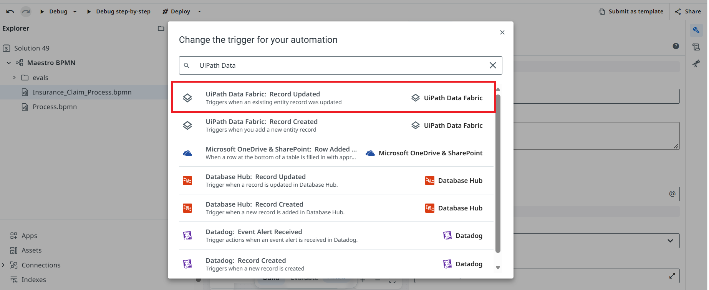
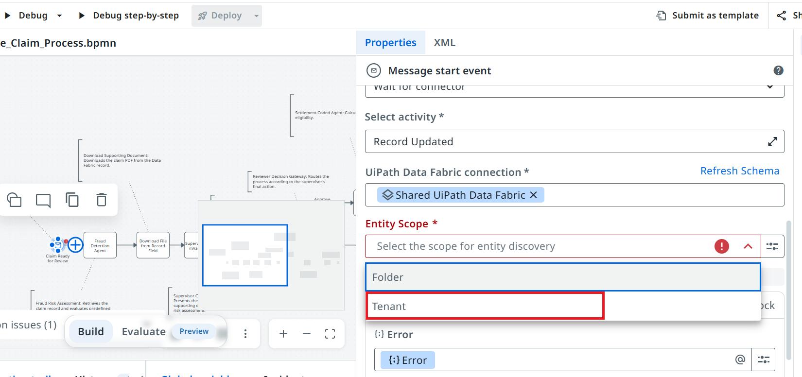
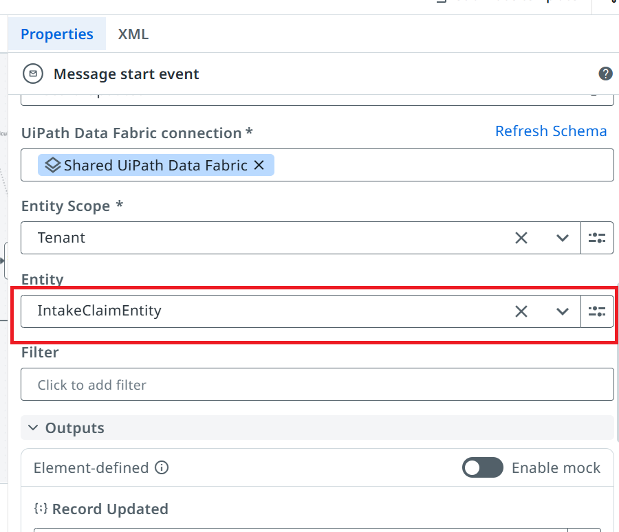
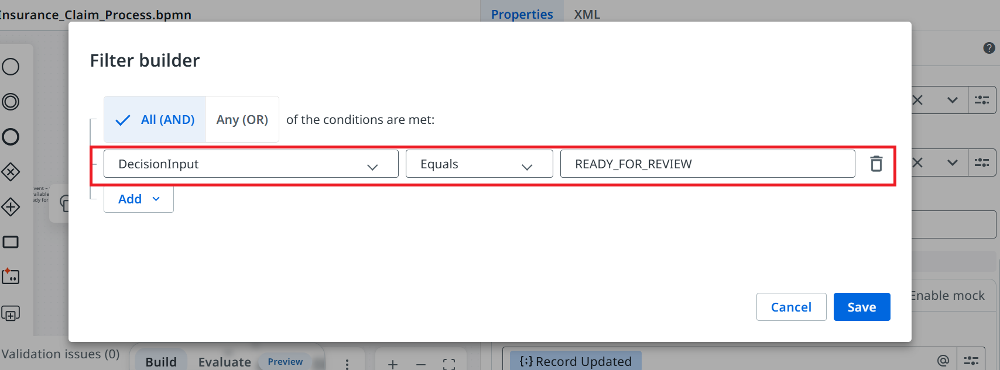
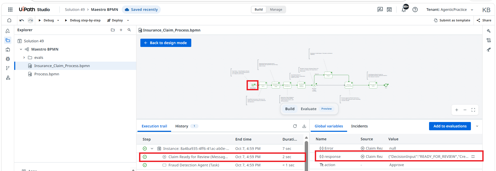

Start Event
Begin with the start event: it makes the whole process start on its own the moment a claim is ready for a decision. You configure the start event to listen for an updated Data Fabric record whose DecisionInput equals READY_FOR_REVIEW.
Open the start event trigger
Select the start event Claim Ready for Review on the canvas. In Properties → Implementation, open the Action dropdown (currently None).

In the Change the trigger for your automation dialog, search for UiPath Data and select UiPath Data Fabric: Record Updated ("Triggers when an existing entity record was updated"). Do not pick Record Created.

Set the connection and Tenant scope
Set Select activity to Record Updated and the UiPath Data Fabric connection to Shared UiPath Data Fabric. Then open Entity Scope and choose Tenant.

Open the Entity dropdown and select IntakeClaimEntity.

IntakeClaimEntity.Add the filter
Click the Filter field to open the filter builder. Keep All (AND), add a condition — field DecisionInput, operator Equals, value READY_FOR_REVIEW — and click Save. Only claims marked ready for review will start the process.

DecisionInput Equals READY_FOR_REVIEW and saved.Debug and check the start event
Click Debug. In the Execution trail the start event Claim Ready for Review should succeed, and under Global variables the response variable should hold the claim record from IntakeClaimEntity. The later tasks are not configured yet, so they may fail for now.

response contains the claim record.